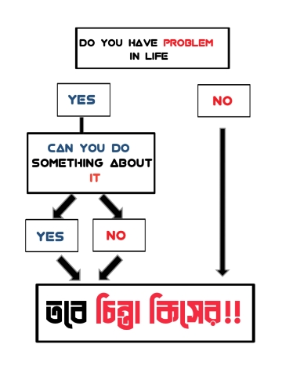
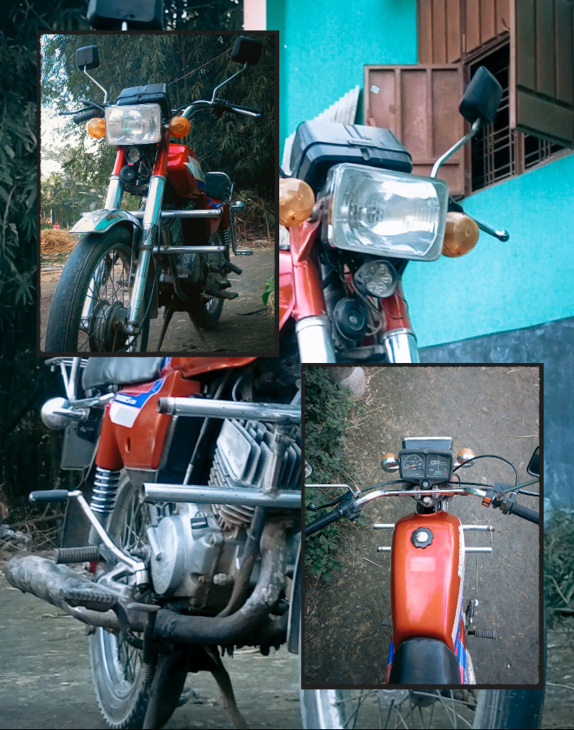
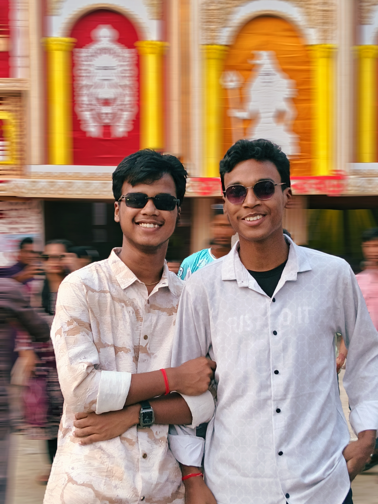
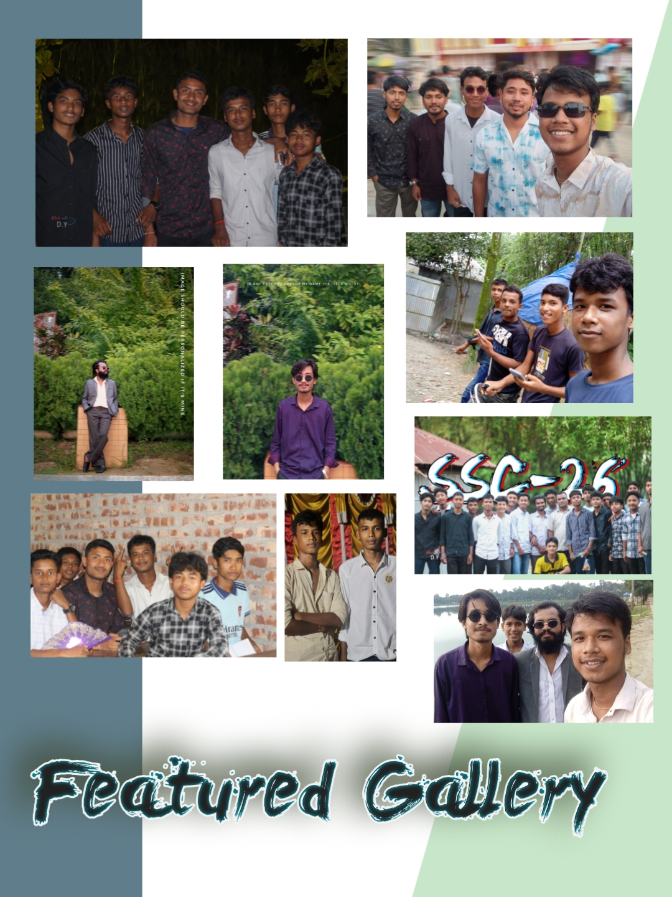

Made it on a whim
Some things captured,
some things just মনে কর
কিছু একটা আছে .
This is just a little space I made for myself — nothing fancy, just mine. Some photos, some thoughts, some music that matters to me.
পূজা ২০২৬
A WORLD OF 🐸
A little about all this
It's just me, DY
Who I am
আমি Dippro.roY — বা DY। capturing images, remembering moments, giving special treatment to time কারণ সময় শুধু নান রুটির জন্য অপেক্ষা করে 🐸।
Not everything needs to be loud or perfect. This is just my corner of the internet — quiet, mine, মোর 🐸.
আজ কিছু ছবি শেয়ার করি
Moments I Kept
◑◑◑◑◑◑◑◑◑◑

Why Worries!!!
01
My Riding Beauty
02
Big Bro
03
Group Feature
04 — হাকাউFind me elsewhere
Where Else I Exist
Not many places online — just the ones that feel like me.
Something to listen to
Music That Fits
My Playlist
Songs I come back to. Not perfect, just right.